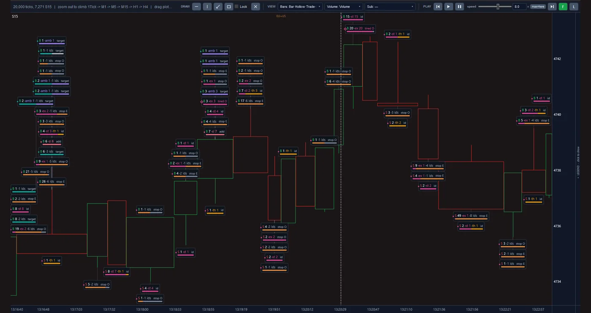
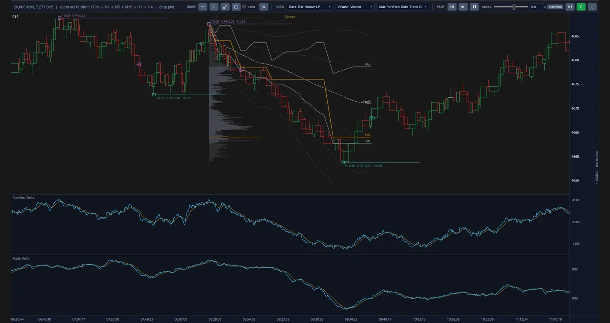
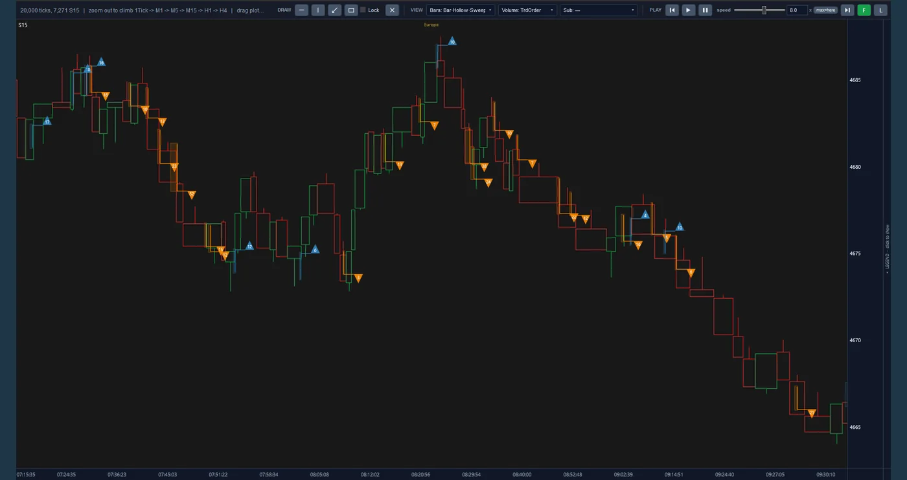

Introduction
Le prix ne bouge pas tout seul. Un mouvement commence généralement là où un trader n’est pas disposé à attendre et accepte le meilleur prix disponible avec un ordre au marché. Beaucoup de ces mouvements s’éteignent en quelques instants et seuls certains se poursuivent. Le trading à court terme, appelé scalping, consiste à accompagner précisément ces mouvements : une entrée rapide, un petit objectif et une sortie précoce. La difficulté est de distinguer le mouvement qui a une force réelle derrière lui de celui qui se retournera avant d’atteindre l’objectif.
Nous avons confié ce jugement à un algorithme qui l’a appris du flux d’ordres du marché lui-même.
Le projet Fast Scalp a rassemblé plusieurs années de données du CME, l’un des plus grands marchés à terme du monde, au niveau de chaque ordre individuel. À partir de ces données, avec l’apprentissage automatique (ML) et l’analyse statistique, nous sommes parvenus à un algorithme de trading à court terme qui est testé au sein d’une reconstitution fidèle de la bourse elle-même. L’objectif est une desk de trading automatisé qui gère le capital avec cet algorithme, et non selon les réactions humaines du moment.
Rapports du simulateur
Ce projet comprend un rapport complet du simulateur d’exécution pour chaque marché. Chaque rapport compare cinq niveaux de latence de transmission des ordres, de zéro à 100 millisecondes. Les deux rapports sont téléchargeables et peuvent être examinés indépendamment de notre analyse.
-
GC Contrats à terme sur l’or
- Déc. 2019 à juil. 2026période de test
- 1 696jours de bourse
- 25 228transactions simulées dans le scénario de base
- 5 scénarios5 niveaux de latence, de zéro à 100 ms
Un fichier HTML autonome, 2,5 Mo, en cinq langues
-
NQ Contrats à terme sur le Nasdaq-100
- Mai 2017 à juin 2026période de test
- 2 342jours de bourse
- 194 302transactions simulées dans le scénario de base
- 5 scénarios5 niveaux de latence, de zéro à 100 ms
Un fichier HTML autonome, 2,6 Mo, en cinq langues
Il s’agit de résultats de simulation sur des données de marché enregistrées (un backtest), et non de trading réel ; ils ne constituent aucune garantie pour l’avenir.
À l’intérieur de la plateforme
Ce sont de vraies captures d’écran de la plateforme du projet, et non des maquettes. Chaque vue montre les mêmes données de marché ordre par ordre sous un angle différent. Cliquez sur l’image pour l’agrandir.



Des barres de quinze secondes et, sur chaque barre, les étiquettes de ses événements : le côté acheteur ou vendeur (B / S), la taille, et des repères tels que le stop et l’objectif.
Des barres de quinze secondes avec un profil de volume, la ligne VWAP et les niveaux POC, VAH et VAL et, en dessous, les panneaux PureReal Delta et Trade Delta.
Les mêmes barres dans la vue Sweep : des triangles bleus et orange, chacun avec son numéro, sur la barre où ils se sont produits.
Approche
L’algorithme apprend à partir des données de marché et est mesuré au sein d’une reconstitution de ce même marché. Le travail a été mené en trois étapes :
-
Des données brutes à l’image complète du marché
L’écran de trading ne montre qu’un résumé du marché. Nous traitons chaque message enregistré par la bourse et reconstituons la liste des ordres en attente à chaque instant. Le résultat est une image de ce qui s’est passé des deux côtés du marché avant chaque mouvement de prix.
-
De l’image du marché à l’algorithme
En apprentissage automatique, l’ordinateur apprend des schémas à partir d’exemples réels au lieu de suivre des règles écrites à la main. De cette façon, et avec l’appui de l’analyse statistique, notre algorithme a appris dans quelles situations un mouvement court se poursuit et dans lesquelles il se retourne. Sa sortie tient en trois décisions : quand entrer, où placer le stop de la transaction et quand sortir.
-
De l’algorithme à l’exécution testée
Un ordre au marché n’attend pas dans une file d’attente et est exécuté dès qu’il atteint la bourse, mais y parvenir prend du temps. Dans cet intervalle, le meilleur prix peut avoir disparu, et la transaction peut être exécutée à un prix moins bon que celui observé au moment de la décision. Notre simulateur reconstitue exactement cela, et l’étalon est le résultat financier net après tous les coûts.
Points clés
-
Un savoir qui réside dans le système, et et non dans la tête des gens.
Le trading à court terme repose traditionnellement sur l’observation et les réactions du trader ; la fatigue et les émotions influent directement sur les résultats. Notre algorithme apprend à partir des données de marché et applique la même logique à chaque transaction. Les connaissances acquises sont conservées dans le système, les résultats sont reproductibles et le modèle peut être réentraîné.
-
De la sélection, non des transactions à la file.
En trading à court terme, le profit de chaque transaction est faible, et son coût, c’est-à-dire les frais et l’écart entre le prix d’achat et le prix de vente, est payé à chaque transaction. Traiter chaque mouvement aboutit donc à une perte ; nous avons mesuré l’entrée sans sélection au coût réel, et elle a perdu de l’argent. C’est exactement là que réside la valeur de l’algorithme : distinguer le mouvement qui mérite une entrée de celui qu’il faut laisser passer.
-
Un résultat qui tient aussi à l’exécution.
De nombreuses stratégies à court terme sont rentables sur le papier mais pas en pratique, parce que leur test suppose qu’un ordre est exécuté au prix affiché. Dans notre simulateur, un ordre arrive en retard et est exécuté sur le volume disponible à cet instant précis. L’exactitude de la simulation a été vérifiée par rapport à une reconstitution indépendante réalisée à partir des données brutes de la bourse.
-
Un risque défini, estimé de façon réaliste.
Chaque position est de courte durée et possède un stop-loss défini dès l’entrée. Ce seuil ne constitue pas une limite absolue de perte : lors d’un mouvement brusque, la sortie peut s’effectuer à un prix moins favorable. Le simulateur prend en compte ce risque et présente la perte résultant de l’exécution simulée, plutôt que la seule perte théorique au niveau du stop.
-
Distinguer les résultats robustes des effets du hasard.
Les modèles d’apprentissage peuvent mémoriser le passé sans avoir rien appris sur l’avenir. Pour l’éviter, l’algorithme est mesuré sur des périodes qu’il n’a pas vues pendant l’entraînement, périodes agitées comprises. Chaque constat est aussi confronté à des données délibérément privées de tout schéma significatif, et s’il y apparaît aussi, il est écarté.
-
Évaluer les besoins d’infrastructure avant d’investir.
En trading à court terme, la vitesse à laquelle un ordre atteint la bourse et les frais de chaque transaction déterminent la frontière entre profit et perte, et améliorer l’un ou l’autre coûte cher. Nous testons l’algorithme sur toute une gamme de ces conditions à la fois. Ainsi, avant tout engagement financier, on sait clairement dans quelles conditions le plan est justifié.
Feuille de route
-
Réalisé
L’infrastructure de données, la reconstitution du marché, l’algorithme de trading, le simulateur d’exécution et le système de rapports sont construits.
-
En cours
Aujourd’hui, nous mesurons l’algorithme dans un test pluriannuel, sous diverses conditions de vitesse et de frais et sur plus d’un marché.
-
Ensuite
Viendront ensuite la connexion aux données en direct, le déploiement à proximité de la bourse et une période d’essai avec un capital limité.
-
Dernière étape
La dernière étape est le trading avec du capital réel, sous la forme d’un desk automatisé.
Technologie
Les modèles d’apprentissage sont construits en Python et entraînés sur un processeur graphique. Le moteur de reconstitution du marché et le simulateur d’exécution sont écrits en C#, et le lecteur de données brutes en Rust. Le résultat de chaque test est présenté dans un rapport standard en cinq langues, et une modification n’est acceptée qu’après avoir été comparée à la version précédente et avoir réussi les tests automatisés.